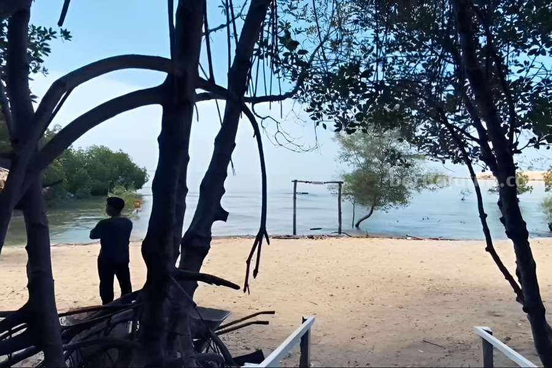

Pantai Hippo Sidorejo
Destinasi wisata bahari yang terletak di Dusun Sidorejo, Desa Campurejo, menawarkan perpaduan indah antara hamparan pasir putih yang luas, air laut jernih, dan hutan mangrove rimbun yang asri. Sebagai tempat wisata ramah keluarga dengan nuansa edukatif tentang ekosistem pesisir dan kelautan, pengunjung dapat menikmati pemandangan sunset yang memukau, menjelajahi jalur mangrove, mengamati keanekaragaman hayati seperti burung dan ikan kecil, serta bermain di spot-spot menarik seperti ayunan kayu dan wahana bertema. Suasana tenang dan hijau membuatnya ideal untuk liburan akhir pekan, fotografi alam, rekreasi keluarga, serta kegiatan santai di tepi pantai yang masih alami.